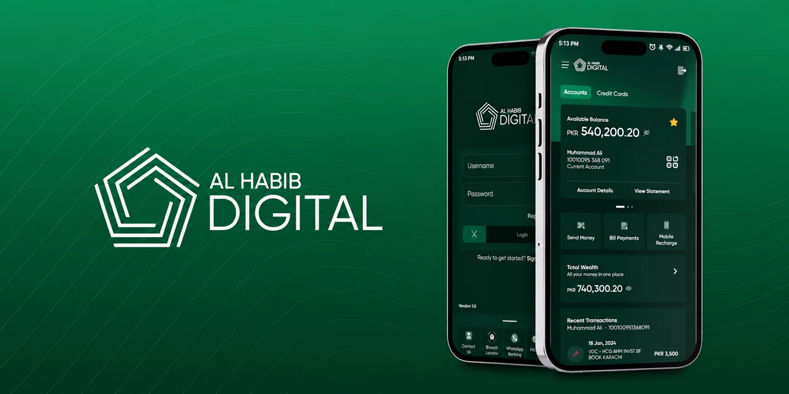

01DIGITAL BANKING · SOLUTION DELIVERY↗

Bank AL Habib
Digital Platform
Contributed to solution design and delivery for an enterprise digital banking platform. Coordinated development, deployment, production support, integration, release planning, and high-availability platform needs.